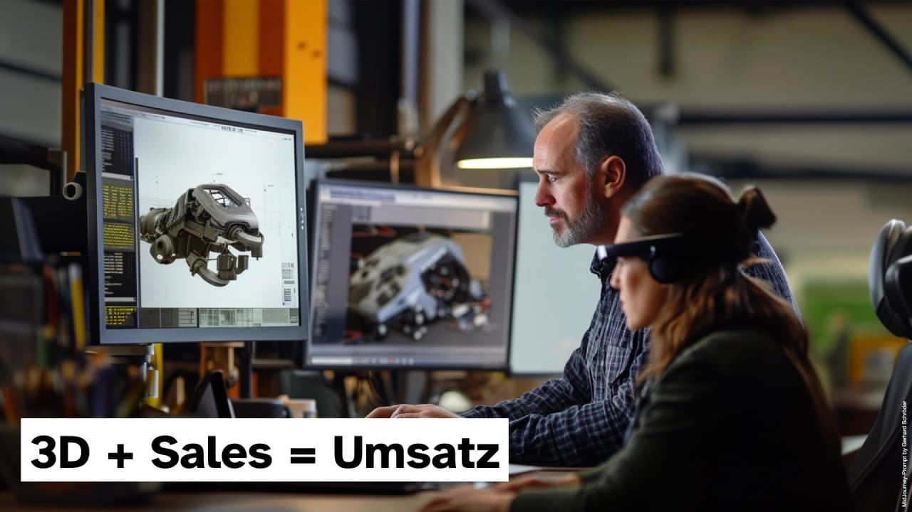
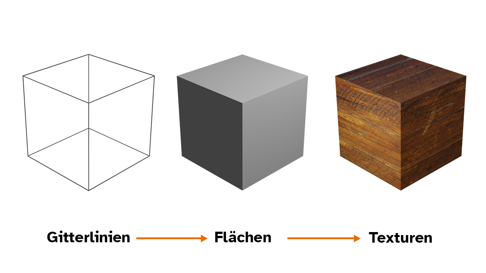

Von CAD zu AR: Wie 3D-Daten Ihre Verkaufszahlen revolutionieren können.


- CAD-Daten als AR-Asset: Bestehende 3D-Konstruktionsdaten lassen sich in USDZ/OpenUSD konvertieren und direkt für Augmented Reality im Vertrieb, auf Messen und in Kundenpräsentationen nutzen.
- Ein Dateiformat für drei Abteilungen: OpenUSD ersetzt getrennte Datensätze für Konstruktion, Marketing und Vertrieb – und reduziert Konvertierungskosten dauerhaft.
- Branchenstandard im Kommen: SIEMENS, BMW, Daimler und Nvidia fordern USDZ-Daten aktiv von Lieferanten – wer heute umstellt, sichert Lieferantenposition und Vertriebsvorteile.
Welche Erfahrungen sammelt man, wenn man 3D-Daten aus Konstruktionsabteilungen erhält und sie in Augmented-Reality-Formate wie USDZ oder GLB konvertiert? Die Erfahrung, dass diese Daten dadurch ein zweites Leben erfahren, denn sie spielen Schlüsselrollen in Konzepten wie „Digital Twin“ und „Industrial Metaverse“.
Schnappt Euch einfach eine Tasse Tee oder Kaffee. Legen wir los…
Einstieg in AR & USDZ — mit Unterstützung.
Wir begleiten Unternehmen vom ersten USDZ-Modell bis zum eingebetteten WebAR-Erlebnis — ohne Umweg über IT-Projekte. Mehr als 15 Jahre B2B-Praxis.
Karl, Franz und Anton - Drei Sichtweisen auf die 3D-Dateien im Unternehmen
Im heutigen Beitrag gehe ich auf einige Punkte eines Projektablaufs ein. Dazu habe ich mir, basierend auf vielen Projekte der letzten Jahren, drei Rollen / Personas definiert:
- Karl, der Geschäftsführer: Was hat die Firma im kaufmännischen Sinne und als größere Strategie von einem solchen Umstellung der Daten?
- Franz, der Vertriebsleiter (ggf. auch Marketing-Leiter): Wie kann durch 3D-Inhalte und Augmented Reality (AR) der Verkauf gestärkt werden?
- Anton: Leiter die Konstruktionsabteilung, ist für die Anlieferung der 3D-Daten zur weiteren Bearbeitung zuständig. Auch diese Sichtweise ist von großer Bedeutung für den Projekt- und Unternehemenserfolg.
Statt nun in dieser Reihenfolge den Artikel aufzubauen drehe ich für den weiteren Textverlauf die Reihenfolge um. Wer mag, kann gern zu „seinem Abschnitt“ springen. Ich empfehle aber auch einem Geschäftsführer, trotz Bottom-Up-Lesart den Artikel ganz durchzulesen. Es erlaubt ein besseres Verständnis aller Beteiligten.
Hinweis: Ich habe hier drei Männervornamen gewählt, es können natürlich MWD-Personen sein. Wer mich Privat kennt, wird vielleicht die Anspielungen aus dem Fantasy-Bereich verstehen. Sorry, kleines Nerd-Geplänkel. Zurück zur Tasse Tee / Kaffee…
Inhaltsübersicht
- Basics: Was sind 3D-Daten und wie erhält man 3D-Daten?
- Anton = CAD: Finzelige technische Details oder das “Große Ganze“
- Franz: Ich will nur mehr Verkaufen. Zu höheren Margen!
- Marketing bringt weitere Anforderungen an das 3D-Format
- Drei Dienstleistungen, nur drei Dateiformate?
- Fallbeispiele für den Einsatz von 3D/AR im Sales-Bereich
- Der Markt fordert usdz-Daten
- Karl und die strategische Frage: Was hat ein Unternehmen von dieser Umstellung?
- Wie startet so ein usdz-Pilot-Projekt?
- Kopf in den Sand stecken hilft nicht!
Basics: Was sind 3D-Daten und wie erhält man 3D-Daten?
Nehmen wir eine Maschinenbaufirma als Beispiel: Technische Zeichnungen einer Konstruktion gibt es schon seit langer Zeit. Ich war vor einigen Monaten in einer DaVinci-Ausstellung in Wuppertal, nicht erst seit diesem Universalgenie werden technische Geräte zu Papier gebracht.
Früher auf großen Papierbögen gezeichnet oder ausgedruckt, werden diese Daten nun digital erstellt und verwaltet. Während ein Text aus Buchstaben und Satzzeichen besteht, setzt sich eine 2D/3D-Datei aus Linien und weiteren Angaben zusammen.
Ich erinnere mich an Schulzeiten als wir auf einem Blatt Karopapier ein Objekt in drei Ansichten zeichnen durften: Vorderansicht, Seitenansicht und eine isometrische Darstellung. In einer 3D-Datei sind diese Ansichten indirekt auch gespeichert, doch eher Neutral, denn alle Linienendpunkte sind mit Angaben zu X-, Y- und Z-Achse versehen. Ergänzt werden können diese Angaben mit Informationen zur Farbe des Gegenstands oder dessen sonstigen Eigenschaften.
Zur Erklärung habe ich ein kleines Schaubild eingefügt:

Neben einer 3D-Datei aus der eigenen Konstruktionsabteilung kann natürlich auch eine solche Datei von einem Lieferanten angeliefert werden und die KollegInnen nutzen diese vorbereiteten Baugruppen für die weitere Bearbeitung. Im Beispiel der Maschinenbaufirma werden vielleicht Teile der Maschine selbst entworfen und produziert, Verkleidungselemente oder simple Schrauben werden eingekauft. Im Idealfall liefert ein Lieferant vorab schon ein passendes 3D-Objekt um Hausintern prüfen zu können ob die Baugruppe für den Einsatzzweck in der 3D-Software genutzt werden kann. Je nach Qualität der Daten kann mit dieser Datei schon eine Simulation einer ganzen Anlage erfolgen bevor überhaupt die echte Maschine gebaut wird. Das spart Zeit und Geld - dieses Thema gehört in den Bereich des „Digitalen Zwillings“.
Neben dem 3D-Konstruieren eines noch nicht bestehenden Objekts durch einen Mitarbeiter (Computer Aided Design = CAD) gibt es den Weg ein bestehendes Objekt in digitale Daten umzuwandeln. Dazu wird ein Objekt in einem 3D-Scan-Verfahren erfasst. Das kann je nach benötigter Messgenauigkeit via Photogrammetrie, aus vielen Fotos, oder via Laserscan auch Bruchteile eines Millimeters genau erfolgen.
Wie diese Daten dann im ersten Schritt vorliegen, als Fotosammlung oder als eine Art Punktewolke der Einzelmessdaten ist für diesen Beitrag nicht relevant. Ich überspringe hier auch Themen wie KI-Modelle, z.B. „Gauss Splatter“, komplett. Es ist ja nur ein Einstieg in ein echt komplexes Thema mit vielen Fallstricken. Ich möchte hier nur an der Oberfläche kratzen.
Anton = CAD: Finzelige technische Details oder das “Große Ganze“
Kollege Anton ist in der Firma zuständig für die CAD-Abteilung, also den Konstruktionsprozess am Computer. Egal ob er nun eine Einzelperson ist oder eine große Abteilung leitet, die Aufgabe dieses Unternehmensbereichs ist es die Daten für die Produktion zu liefern. Nun benötigt der Kollege an der Presse oder der Spritzgussmaschine aber keine Daten zu einer angelieferten Schraube ABC wenn seine Aufgabe das Fräsen eines Metallblocks für eine Presse ist. Die Schraube wird ja erst in der Endmontage benötigt. Also sind in seinen 3D-Dateien diese Elemente ausgeblendet oder erst gar nicht vorhanden. Logisch, oder?
In der Regel werden in den 3D-Daten vom Konstrukteur nur minimale Daten angegeben. Es ist „ja klar“, dass dieser Block auf Stahl der Sorte XYZ gefräst werden muss. Vielleicht wird diese Basisangabe in die Metadaten der Datei hingeschrieben. Oft fehlen aber „weil machen wir schon immer so“, aber alle genauen Angaben zum Material. Das kann auch daran liegen, dass die Software oder das verwendete Dateiformat diese Daten gar nicht erfassen kann, da es so nicht vorgesehen ist.
Diese fehlenden Daten sind aber in einer immer digitaleren Welt eine Art „Folgefehler“ der im weiteren Lebenszyklus der 3D-Daten einen Rattenschwanz an Mehrarbeiten nach sich zieht.
Aufwände, die am Ende dem Geschäftsführer Karl garnicht klar sind und Anton hat ja in der bisherigen Arbeitsweise „seinen Job erfüllt“.
Wenn es nun ein Dateiformat gäbe in dem aber als eine Art Master-Datei alle Angaben zu der Konstruktion gespeichert wären, dann könnten auch für weitere Schritte auf diese Angaben zurück gegriffen werden. Vorweg: Es gibt dafür in der heutigen Zeit eine Lösung: OpenUSD.
Eine solche „Master-Datei“ erlaubt es eben alle Angaben zu einem Objekt zu speichern, selbst wenn die Person an der Werkbank diese Angaben nicht benötigt. Diese Daten können aber in anderen Abteilungen benötigt werden.
Jede neue Technologie bedeutet oft zusätzlichen Aufwand und Veränderungen in den Arbeitsabläufen. USDZ kann jedoch nicht nur Herausforderungen, sondern auch Vorteile bringen – wenn die Integration gut geplant ist.
Mögliche Bedenken:
- Mehrarbeit für das CAD-Team: Die Erstellung von 3D-Modellen im USDZ-Format erfordert möglicherweise neue Software und zusätzliche Arbeitsschritte. Das könnte Ihren ohnehin engen Zeitplan belasten. Hier können für den Start externe Partner wie visales helfen.
- Technische Komplexität: Änderungen an Konstruktionen müssen ständig aktualisiert werden. Wie einfach ist die Integration von USDZ in bestehende CAD-Systeme? > Hier ist der Vorteil das sich OpenUSD mit USDZ zu einem breiten Industriestandard entwickelt hat.
Viele Vorteile:
- Wiederverwendung bestehender CAD-Daten: In vielen Fällen können vorhandene 3D-Daten aus Ihrer Konstruktionssoftware direkt ins USDZ-Format exportiert werden. Damit bleibt der Aufwand überschaubar.
- Bessere Zusammenarbeit mit Kunden: Interaktive Modelle ermöglichen Kunden frühzeitiges Feedback. Das kann Nacharbeiten reduzieren und sicherstellen, dass die Konstruktion von Anfang an die Erwartungen erfüllt.
- Innovationsschub: Die Arbeit mit AR-Formaten stärkt die digitale Kompetenz Ihres Teams und macht Sie für die Zukunft wettbewerbsfähiger.
Fazit: Zwar bringt USDZ neue Herausforderungen, doch mit klaren Prozessen und Unterstützung kann es die Zusammenarbeit mit Kunden verbessern und langfristig sogar Ihre Abteilung entlasten.
Franz: Ich will nur mehr Verkaufen. Zu höheren Margen!
Ich bin in meinem Unternehmen selbst in der Rolle. Klar, als Marketing- und / oder Vertriebsleiter habe ich Umsatzverantwortung. Doch die Wahl eines 3D-Formats, Vordergründig nur eine Aufgabe für Anton und die CAD-Abteilung, hat heutzutage Auswirkungen auf den Verkauf.
Dazu ein Beispiel: Einige Firmen bieten heute auf der Website direkt das Herunterladen einer 3D-Datei eines zu verkaufenden Produkts an. Mal nur nach einer Registrierung, dann hat der Verkauf ja einen Lead für die Ansprache, mal frei zugänglich. Beide Wege sind legitim und hängen von vielen Faktoren ab.
Wenn der Datensatz meines Mitbewerbers, wie oben beschrieben, zur Verfügung stellt und mein Unternehmen nicht, dann habe ich im Vertrieb einen Nachteil. Und wenn ich die Daten in einem „schlechten Format“, mit nur einem Teil der Daten anbiete, dann ist das bessere Format vielleicht entscheidend ob das Produkt bei mir gekauft wird - oder beim Mitbewerber.
Wenn der Mitbewerber den von mir oben beschriebenen Datensatz mit Infos für die Simulation in einer großen Anlage umfasst, ich jedoch nur Basisdaten anbieten kann, dann… erhalte ich als Sales die Absage. Weniger Umsatz für meinen Verantwortungsbereich = schlecht fürs Geschäft. Kann ich mir das in der heutigen Zeit erlauben?
Embed: https://www.youtube.com/watch?v=M61PI52ZtbE
”…Erfahrungen aus den letzten Veranstaltungen , bei den wir gerade mal eine Präsentationsfläche von 2x3 m hatten. Auf 6 m² ein Exponat unterzubringen ist schon eine Aufgabe, wenn man unsere Produkte kennt, aber das Exponat auch noch interessant zu präsentieren, ist ohne Bewegung nicht möglich. Das Auge sieht zwar alles, aber “gecatcht” wird es nur von Bewegung, Interaktion! Gleiches gilt natürlich auch für eine Gesamtpräsentation! Als Vertriebler, kann, soll und muss ich meinem Gegenüber soviel Informationen bieten wie nötig/möglich, aber noch so schöne Worte können nicht das beschreiben, was das Auge selber sieht und als Information in’s Hirn weiterleitet.” Thomas Kernchen, Prokurist unseres Kunden Carl Hamm zum Beitrag “Messeerfolg maximieren: Exponate durch Augmented Reality aufwerten”
Marketing bringt weitere Anforderungen an das 3D-Format
Franz ist vielleicht „Marketing & Sales“-Leiter in Personalunion. Dann hier noch ein weiteres Argument für eine gute Datenbasis: Die CAD-Daten gehen an die Kommunikationsabteilung, welche intern oder extern Werbegrafiken für die Website und Verkaufspräsentationen erstellt. Anton hat in seinen Dateien jedoch keine Materialeigenschaften im Detail gespeichert. Also muss Franz in seinem Verantwortungsbereich diese Angaben nachpflegen, in einem anderen Dateiformat.
Oft kommen CAD-Daten als STEP-Dateien in der Marketing-Abteilung an. In manchen Unternehmen gibt es nur simple Grafiken aus den CAD-Programmen. Wie wir alle Wissen: Eine schöne Produktdarstellung verkauft besser. Also wird die CAD-Datei in eine andere Software importiert die auf „schöne Bilder“ ausgelegt ist, dort um benötigte Angaben für den Look ergänzt und dann als Standbild oder Animation exportiert. So kann ein Bild für das Prospekt oder das Produktvideo entstehen.
Dabei werden technische Angaben, die vielleicht in der Ursprungsdatei enthalten waren, wie physikalische Materialeigenschaften (z.B. die Ausdehnung des Materials bei Erwärmung) entfernt und stattdessen der Oberflächenglanz hinzugefügt. So kann ein schönes Bild erstellt werden.
Nun ist das Unternehmen ja ein modernes Unternehmen und hat sogar eine Lösung um auf einer Messe einem potentiellen Kunden eine VR-Brille aufzusetzen und dem Interessenten so einen optimalen Eindruck von den Produktvorteilen zu geben. Erhöht ja die Verkaufswahrscheinlichkeit für das Produkt. Absolut.
Dazu wird, oft von einem Dienstleister wie meinem Unternehmen, die CAD-Datei in noch ein anderes Format umgewandelt, was weitere Kosten verursacht, dann in eine VR-App integriert und um weitere Angaben ergänzt die für die VR-Darstellung benötigt werden.
Embed: https://www.youtube.com/watch?v=dDTESsqB8HI
Video-Fallbeispiel igus GmbH TRX: CAD- zu AR-Daten
Somit hat die Firma nun mindestens drei Dateien mit unterschiedlichen Angaben für ein Produkt. Und wie so oft, sind diese Datensätze sind nicht rückwärtskompatibel:
- CAD-Daten aus der Konstruktionsabteilung
- 3D-Grafikdaten von der Werbeagentur, je nach Agentur in einem anderen Format als „die andere Werbeagentur“. Bei einem Agenturwechsel kann das zu hohen Folgekosten oder einer Bindung an einen externen Dienstleister führen
- AR oder VR-Daten von der AR-/VR-Agentur
Drei Dienstleistungen, nur drei Dateiformate?
Tatsächlich sind es sogar noch mehr Formate, denn im Bereich AR/VR gibt es nicht den EINEN Standard. Wir sind hier gerade in einem Datenformat-Wettstreit wie damals zur Zeit von
- VHS vs. BetaMax vs. Video2000 (Meine Kindheit)
- Commodore C64 vs. Atari 800XL (Meine frühe Jugend)
- Netscape vs. Internet Explorer (Meine ersten Berufsjahre)
- Android vs. iPhone (Gegenwart)
Im Bereich AR/VR gibt es -ganz GROB- „Lösungsanbieter mit Komplettsystemen“ im Bereich der Software. Dazu zähle ich hier die Programme Unity und Unreal, die eine Software-Entwicklungsumgebung und eine Lösung zum Ausspielen der Apps anbieten. Je nach Endgerät kann es sein, dass aus einer Entwicklungsumgebung für das Smartphone und eine VR-Brille auf Knopfdruck eine App erzeugt werden kann. Doch die Realität ist eine ganz Andere: Meistens sind größere Umstellungen erforderlich, die Folgekosten nach sich ziehen, was das Marketing-Budget zusätzlich belastet.
Zusätzlich gibt es den Weg der Web-basierten Lösungen, teilweise via Browser (Android) oder via Betriebssystem (Apple). Hierbei sind zwei Dateiformate im Einsatz:
- glb (glTF-Standard von Google): Kann genutzt werden um statische oder einfach animierte 3D-Objekte im Browser / der Website anzuzeigen oder um diese Dateien, fast immer mit Anbindung an die Google-Datenserver, als AR-Element auf dem Smartphone anzuzeigen.
- usdz (OpenUSD-Standard, ein OpenSource-Standard, der von Apple, Pixar, Siemens, BMW, Daimler, Nvidia uvm. unterstützt wird): Er kann im Browser Gigabyte-große Dateien anzeigen lassen, um direkt auf dem iPhone oder iPad als AR-(Verkaufs-)Erlebnis genutzt werden - ideal für den Messeeinsatz - oder ohne weitere Anpassungen mit der Apple Vision Pro in Meetings erlebt werden. Außerdem kann die Datei in einer Industrial Metaverse-Lösung wie dem Omniverse von Nvidia für Simulationen genutzt werden. Einziger Wermutstropfen: Zur Zeit ist Google (siehe oben) noch auf dem glTF-Pfad und Android-Handys können diese Dateien nur via einer Zusatz-App anzeigen. Doch auch dazu gibt es eine einfache Lösung: Umwandlung der Minimalinformationen aus der USDZ-Master-Datei in eine glb-Datei fürs Android-Handy, dann geht es auch im Chrome-Browser auf Android.
Genau genommen ist es ein schlechter Vergleich: usdz ist eine 3D-Dateispezifikation die von vielen CAD/3D-Systemen unterstützt wird, selbst SIEMENS hat seine CAD-Software um eine usdz-Exportfunktion ergänzt.
Embed: https://www.youtube.com/watch?v=cN8boqmD8Tc
Video: Weitere Unterschiede zwischen den beiden Formaten, als Video von mir. Weitere Videos in meinem YouTube-Kanal.
Man kann es als Stärke oder Schwäche ansehen: Während Unity und Unreal je eine US-amerikanische Lösung darstellen, die jedoch untereinander nicht wirklich kompatibel sind, ist OpenUSD ein offener Standard der weltweit immer größere Verbreitung findet und sich gerade im IEEE-Standardisierungsprozess befindet, dem internationalen Gegenstück zur DIN (Deutsche Industrie Norm).
Fallbeispiele für den Einsatz von 3D/AR im Sales
Mit solchen AR/VR-Lösungen kann man an vielen Stellen die Produkteinführung unterstützen, den Vertrieb auf Messen, Website oder Prospekten via QR-Code anfeuern usw. usf. Dazu gibt es in diesem Newsletter oder meinem YouTube-Channel schon viele Beispiele, hier sechs Links als Lesetipps:
- HowTo: Sales mit AR
- Fünf Lösungen zur Augmented Reality-Hardware im Vertrieb
- Sales im Industrial Metaverse
- Drei Ideen zu Messen, ganz ohne Apples Vision Pro
- Willkommen in der Zukunft: Wie 3D-Spatial-Websites das Web mit “Augments“ verwandeln
- Messeerfolg maximieren: Exponate durch Augmented Reality aufwerten
Vorteile für Sales & Marketing
- Interaktive Präsentationen: Statt statischer Bilder oder PowerPoint-Folien können Kunden mit USDZ lebendige 3D-Modelle erleben, die direkt auf deren Geräte geladen werden. Diese Modelle sind interaktiv und können in Augmented Reality dargestellt werden – das schafft Vertrauen und begeistert.
- Differenzierung vom Wettbewerb: Viele Maschinenbauunternehmen präsentieren ihre Produkte auf die gleiche Weise. Mit USDZ setzen Sie neue Maßstäbe und hinterlassen einen bleibenden Eindruck.
- Effizientere Kommunikation: Kunden können bereits im Vertriebsgespräch mögliche Anwendungsfälle direkt in ihrer Umgebung testen. Das erleichtert die Vorstellung und verkürzt den Entscheidungsprozess.
Mögliche Bedenken:
- Nicht alle Kunden sind technikaffin: Einige Ihrer B2B-Kunden könnten skeptisch gegenüber AR-Anwendungen sein. Für diese Zielgruppen gibt es ja neben den bisherigen Darstellungsformen - und sei es eine interaktive Powerpoint - viele weitere Aufbereitungsformen (Beispiele), die leicht aus der USDZ-Fassung erzeugt werden können. Der umgekehrte Weg ist jedoch nicht möglich.
- Sie sind auf Unterstützung durch die Konstruktionsabteilung angewiesen, um hochwertige Inhalte bereitzustellen. Alternativ werden dauerhaft teurere, externe Dienstleister benötigt.
Fazit: USDZ ist eine Chance, Verkaufszahlen zu steigern und Kunden ein unvergleichliches Erlebnis zu bieten. Mit der richtigen Unterstützung und Vorbereitung wird es zu Verkaufsbooster. Das bestätigen uns viele Kunden sogar in Video-Testimmonials.
Der Markt fordert usdz-Daten
Nicht ohne Grund hatte ich schon Unternehmen wie deutsche Autobauer oder SIEMENS erwähnt. Zur Zeit nutzen diese Unternehmen USDZ-Dateien für die Projekte der „Digitalen Zwillinge“ im Anlagenbau, PKW-Fertigung oder Wartung ganzer Fabriken. Von Themen wie Schulungs-Software für VR-Brillen habe ich da noch garnicht geredet. Ich hörte schon von verschiedenen Unternehmen das große Konzerne damit anfangen, von den Lieferanten genau solche Daten anzufordern. Und wer bei Konzern X, Y oder Z als Lieferant gelistet werden möchte und keine passenden Daten anliefern kann…
Einstieg in AR & USDZ — mit Unterstützung.
Wir begleiten Unternehmen vom ersten USDZ-Modell bis zum eingebetteten AR-Erlebnis im Vertrieb. Das erste Gespräch dauert 30 Minuten. Ohne Pitch, ohne Vorbereitungspflicht. Rheingas, Somfy und Carl Hamm haben mit einem Produkt begonnen.
Karl und die strategische Frage: Was hat ein Unternehmen von dieser Umstellung?
Als Geschäftsführer sieht Karl an der Stelle zunächst nur eine Zahl: Mehrkosten für die Umstellung. Doch die Einsparungen = Return on Investment (ROI) schon ab dem ersten Jahr sind groß. Wenn nicht mehr drei Abteilungen oder Dienstleister mit getrennten Datensätzen arbeiten, keine Informationen mehrfach -oft manuell- gepflegt werden müssen, dann spart das Unternehmen schnell. Dienstleister erhalten von der CAD-Abteilung direkt passend aufbereitete Datensätze, haben weniger Aufzubereiten, was Kosten senkt. Wenn dann noch die Datensilos der Dienstleister „aufgebrochen“ werden und die Daten von Unternehmen A nach B übertragen werden können - welcher UnternehmerIn mag da NEIN sagen?
„Wenn noch nicht geschehen, sollte man sich mit der Erstellung von AR-fähigen Inhalten beschäftigen, es wird die Zukunft beherrschen.“ Thomas Brandt, Bundeswehr zu meinem Vortrag vor seinen 130+ KameradInnen
Die gute Nachricht: Es braucht keine sofortige 100%-Radikalumstellung. Am Ende sind die Umstellungsprozesse in jedem Unternehmen individuell, in der Regel starten wir als viSales GmbH mit ein paar ersten Dateien. Bei den oft vielen Datensätzen in weiteren Projektabschnitten können dann halb- oder vollautomatische Umwandlungsprozess gestartet werden. Wie immer, die ersten Dateien und Schritte sind der größte Aufwand.
Wenn dann Karl, Franz und Anton die ersten 3D-Daten im neuen Format USDZ mit iPhone, iPad oder einer Apple Vision Pro ausprobiert haben, die Produkte animiert oder vielleicht direkt interaktiv als Variantenkonfigurator „erleben“, dann sehe ich jedes Mal „Augen leuchten“ und bei den „drei AnsprechpartnerInnen“ beginnt die Magie im Kopf zu wirken.
„Wenn wir diese Daten so an unseren Kunden X liefern können, nutzt er die Daten für seine Konstruktion…“ - „…oder kann in einem virtuellen Prüfstand…“ - „…oder kann seine Schulungssoftware direkt mit unseren 3D-Maschinen…“
Vorteile für die Geschäftsführung:
- Kostensenkung bei Prototypen und Präsentationen: Hochwertige 3D-Modelle im USDZ-Format können physische Prototypen teilweise ersetzen. Das spart Material-, Produktions- und Transportkosten. Produkte können potenziellen Kunden digital präsentiert oder sogar in deren Umgebung integriert werden, ohne dass physische Muster notwendig sind. Siehe dazu auch meinen Beitrag zu Messen mit AR:
- Innovative Kundenerfahrung: Ein modernes AR-Erlebnis hebt Ihr Unternehmen im Wettbewerb hervor. Kunden können Maschinen oder Baugruppen direkt in ihrer Arbeitsumgebung visualisieren – ein Plus für den Entscheidungsprozess.
- Nachhaltigkeit als Wettbewerbsvorteil: Weniger physische Prototypen bedeuten auch weniger Abfall und Ressourcennutzung, was Ihre Nachhaltigkeitsziele unterstützt.
Mögliche Bedenken:
- Die Einführung erfordert zunächst Investitionen: Software, Schulungen und die Erstellung der 3D-Modelle kosten Zeit und Geld.
- Abhängigkeiten von alten Technologiestandards könnten langfristige Risiken bergen. Deshalb ist es wichtig, den Markt zu beobachten und flexibel zu bleiben. Da ist OpenUSD als offene Plattform genau die richtige Wahl.
Fazit: Wenn die Kosten klar kalkuliert und die Einsatzmöglichkeiten gut geplant sind, kann USDZ eine lohnende Investition darstellen. Es bietet eine zukunftssichere Grundlage für innovative Kundenansprache und Kostensenkung.
Wie startet so ein usdz-Pilot-Projekt?
Oft senden uns potentielle Kunden erst ein NDA und dann eine Testdatei. Wir schauen bei den 3D-Daten dann „unter die Haube“ und geben eine Einschätzung ab, wie Aufwändig die Umwandlung der ersten Datei wird. In der Regel ist die erste Datei der aufwändige Part: Wir erhalten die Baugruppe oft als „nackte Daten“, wie beschrieben fehlen an der Stelle viele genaue Angaben wie die Materialbeschreibung.
Hier nur ein paar einfache Beispiele:
- Welcher RAL-Farbton für den Kunststoff genau? Blau ist eine recht grobe Angabe. Hausfarben aus dem Kunden-Designmanual müssen ebenfalls eingearbeitet werden
- Welchen Glanz hat das Metall genau? Am Ende soll es ja möglichst naturgetreu aussehen und nicht unnatürlich - und selbst wenn für Werbezwecke dann ein „Bonuslook“ vergeben werden soll - die Basisdaten helfen das „Design-Delta” zu definieren
- Wie bewegt sich die Baugruppe genau? Gibt es Gelenke? Scharniere? Oft erhalten wir von den CAD-Teams Einzeldateien und steigen dann mit Konstrukteuren und Produktmanagern in die Diskussion ein: Wie genau geht… Wann genau… Wie schnell kann sich der Gelenkarm drehen? (Nach “zu schnell“ kommt ja AB!)
Wenn diese Angabe auch in der Konstruktion, bei Anton, noch nicht benötigt wird, die Kollegen aus dem Marketing benötigen diese Angabe später sowieso für Animationen oder ein anderes Team für Simulationen. Eine Liste mit definierten Materialeigenschaften etc. für die zu konvertierenden Produkte wird erstellt. Je nach Kundenanforderungen wird es also von „eine Liste erstellen und ein paar Knöpfe drücken“ -ein eher seltener Fall- bis zu „da müssen wir im Team selbst mal rumfragen“ da diese Teilinformation vielleicht gar nicht dokumentiert, sondern in den Köpfen eines langjährigen Mitarbeiters, der bald in Rente geht, verborgen ist.
Kopf in den Sand stecken hilft nicht!
Nun ist nur noch die Frage welche der drei Personas im Unternehmen Karl, Franz oder Anton den ersten Schritt gehen mag und meinem Unternehmen, einem DER USDZ-Spezialisten in Deutschland, eine Testdatei zuschickt. Die letzte Anfrage erfolgte vor ein paar Tagen von einem Geschäftsführer, der Sonntags beim Frühstück via Google Suche mein Unternehmen fand und direkt eine Email schrieb. Anfragen gern via LinkedIn-Nachricht, Zoom-Call-Terminanfrage oder guter, alter Email.
Ich gebe zu: Oft kommuniziere ich hier nur über den Sales-Einsatz dieser 3D-Dateien: Ist sooo schön offensichtlich und lässt sich leichter als Video aufbereiten. In Zukunft werde ich aber immer öfter auch über die weiteren Einsatzwecke dieser USDZ-Dateien berichten. Versprochen!
Viele Grüße aus Velbert
Gerhard Schröder
Typische Entscheiderfragen
→ Praxiseinsatz von AR: AR im B2B-Vertrieb – der große Überblick
→ viSales als OpenUSD-Dienstleister: OpenUSD im Maschinenbau & Industrie
Häufige Fragen
Kann ich meine CAD-Daten direkt für AR im Vertrieb nutzen?
Ja – CAD-Daten sind die ideale Ausgangsbasis für AR. Mit dem richtigen Workflow lassen sich bestehende CAD-Modelle (CATIA, SolidWorks, STEP) in USDZ konvertieren und sofort auf dem Smartphone als AR-Exponat einsetzen – ohne Neumodellierung.
Was ist der Unterschied zwischen CAD-Datei und USDZ?
CAD-Dateien sind für technische Konstruktion optimiert – mit Maßgenauigkeit, Baugruppen und Metadaten. USDZ ist ein visualisierungsoptimiertes 3D-Format für AR und Web. Die Konvertierung reduziert Komplexität gezielt, damit das Modell auf mobilen Geräten flüssig läuft.
Welche Branchen profitieren am meisten von CAD-zu-AR im Vertrieb?
Besonders stark profitieren Maschinenbau, Automatisierungstechnik, Medizintechnik und Chemie – überall dort, wo Produkte groß, teuer oder komplex sind und nicht zum Kunden mitgebracht werden können.
Wie läuft ein CAD-zu-AR-Projekt bei viSales ab?
Der Ablauf ist standardisiert: CAD-Daten übergeben → Analyse & Optimierung → USDZ-Konvertierung → AR-Integration (WebAR oder Quick Look) → Test auf iOS/Android → Übergabe mit Nutzungsanleitung. Ein erstes Pilotprojekt dauert typischerweise 2–4 Wochen.